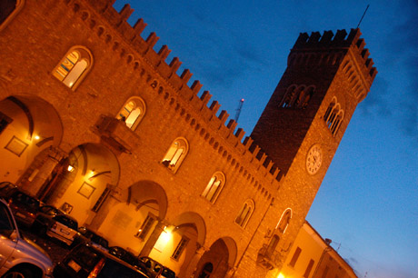
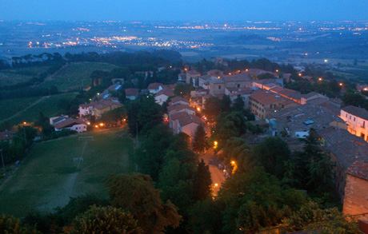

BiCi events are held in the
University Residential Center
located in the small medieval hilltop town of
Bertinoro. This town is in Emilia
Romagna about 50km east of
Bologna at an elevation of 230m
above sea level. Bertinoro is easily reached by
train and taxi from Bologna and is close to many
splendid Italian locations such as
Ravenna,
Rimini on the Adriatic coast, and
the
Republic of San Marino (all within
35km) as well as some less well-known locations like
the thermal springs of Fratta Terme, the Pieve di San
Donato in Polenta and the castle and monastic gardens
of Monte Maggio. Bertinoro can also be a base
for visiting some of the better-known Italian
locations such as Padua, Ferrara, Vicenza, Venice,
Florence and Siena.
Bertinoro itself is picturesque, with many narrow streets
and walkways winding around the central peak.
Meetings are held in an archiepiscopal castle that has been
converted by the University of Bologna into a modern
conference center with computing facilities and Internet
access. From the castle you can enjoy a beautiful
vista that stretches from the Tuscan Apennines to the
Adriatic coast and the Alps over the Po Valley.

